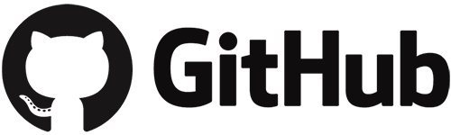

<div class="background">
    <div class="content">
        <div class="row no-gutters">
            <div class="col-sm-6 bd-r">
                <div class="title left">
                    <h2>
                        Créateur d'objets<br>connectés
                    </h2>
                </div>
                <div class="description left">
                    <p>
                        Depuis 2017 , je travaille au sein de la société nantaise Captiv, en tant que développeur web et responsable technique.<br><br>
                        Cette société commercialise depuis 2019 le premier tapis connecté, à destination des personnes en fauteuil roulant, conçu dans le but de surveiller leur positionnement et limiter les risques d'apparition de problèmes de peau : gaspard..<br><br>
                        Mon équipe et moi-même sommes en charge du développement du logiciel embarqué, des applications mobiles, du SAV, de sa certification et d'encore beaucoup d'autres choses qu'implique la conception d'un produit nouveau et innovant.
                        Pour en découvrir d'avantage, je vous invite à faire un tour sur le site de gaspard..
                    </p>
                </div>
                <div class="portrait p-bd-bl">
                    .
                </div>
                <div class="custom-button">                
                    <span><a href="https://www.mistergaspard.com" target="gaspard"></a></span>
                </div>
            </div>
            <div class="col-sm-6 bd-l">
                <div class="title right">
                    <h2>
                        Mieux me connaitre,<br> moi et mon travail
                    </h2>
                </div>
                <div class="description right">
                    <p>
                        Mon travail est aujourd'hui bien évidemment confidentiel. Mais si vous souhaitez en connaitre d'avantage sur mes compétences, vous pouvez 
                        <a href="../../assets/documents/CV_Dann_Bonderff.pdf" target="CV">télécharger mon CV</a>, ou encore découvrir mon profil Github.<br><br>
                        Il est encore un peu vide à ce jour, mais j'essayerai d'y partager régulièrement les templates de mes différents projets, ou encore les scripts que j'utilise régulièrement.<br><br>
                        Vous y trouverez également le template de ce site. Il est construit sur la stack MEAN. Il s'agit de la première fois que j'utilise pleinement Angular dans l'un de mes projets. Je compte sur votre indulgence.😊
                    </p>
                </div>
                <div class="portrait p-bd-br">
                    .
                </div>
                <div class="custom-button">                
                    <span><a href="https://github.com/Badane" target="github"></a></span>
                </div>
            </div>
            <div class="offset-sm-3 col-sm-6 bd-t">
                .
            </div>
        </div>
    </div>
</div>


